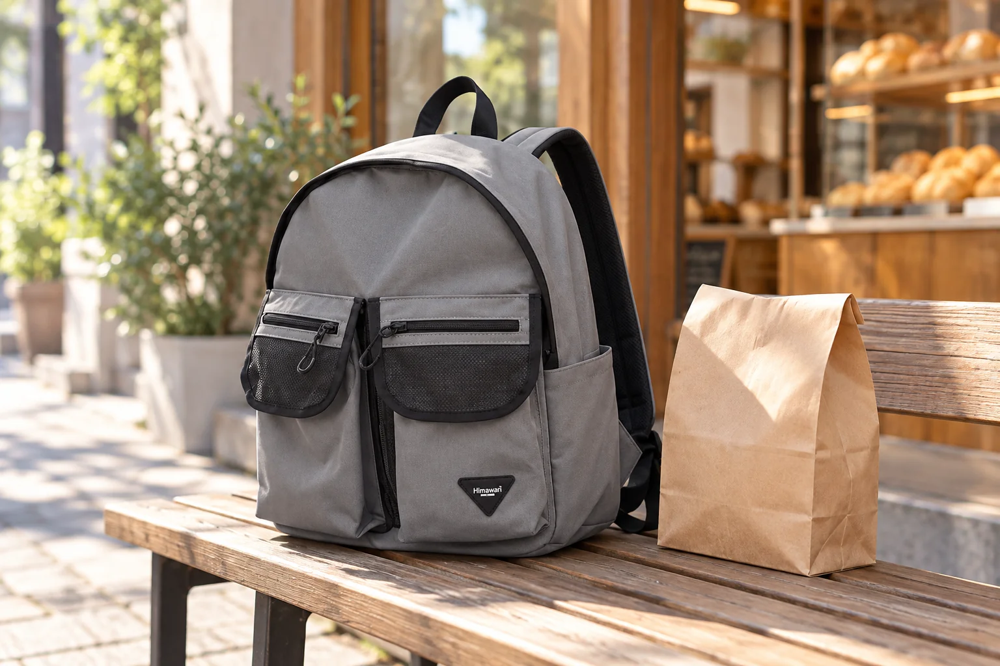

빵집에 들른 아침: 갓 산 빵과 백팩은 어떻게 들고 갈까

아침 산책길에 빵집에 들렀다가 아직 따뜻한 빵을 종이봉투에 받아 나오는 장면을 떠올려 보세요. 빵을 사기 전에는 손이 비어 있었지만 계산을 마치면 봉투 하나가 이동 동선에 더해집니다. 백팩에 빈 공간이 있다고 해서 포장째 바로 넣기보다 매장이 알려 준 포장·보관 방법과 빵의 형태를 먼저 살피는 편이 좋습니다. 이 글은 빵의 보존법을 단정하기보다 가방 속 개인 물건과 구매한 음식을 뒤섞지 않는 작은 준비를 다룹니다.
계산대에서 포장 방식을 먼저 확인합니다
바삭한 빵, 부드러운 빵, 크림이나 소스가 들어간 빵은 포장이 다를 수 있습니다. 매장이 권하는 운반·보관 방법이 있다면 그것을 먼저 따르세요. 종이봉투의 바닥이 안정적인지, 들고 걷는 동안 접히지 않는지 확인하면 가방에 넣을지 별도로 들지 판단하기 쉽습니다. 여러 빵을 샀다면 눌리기 쉬운 것의 위치를 직원에게 물어보는 것도 방법입니다.
백팩에는 평소 물건의 자리를 남겨 둡니다
지갑과 열쇠, 전자기기, 노트 같은 개인 물건이 이미 가방에 있다면 따뜻한 빵 봉투를 그 사이에 억지로 넣지 마세요. 봉투가 기울거나 눌릴 수 있고, 부스러기가 새면 나중에 가방 안을 다시 비워야 합니다. 별도로 들기 어렵다면 매장에 추가 포장을 문의하고, 가방 안에 넣는 경우에도 포장의 상태와 다른 물건과 닿는 위치를 직접 확인하세요. 백팩 자체에 식품 보관 기능이 있다고 가정하지 않습니다.
돌아오는 길에는 손의 역할을 정합니다
봉투를 든 손으로 휴대전화를 계속 꺼내면 종이 손잡이가 비틀리거나 봉투가 옷과 부딪힐 수 있습니다. 길을 확인하거나 결제 내역을 볼 일이 있다면 안전하게 멈춰 서서 가방에서 필요한 물건을 꺼내세요. 대중교통을 이용한다면 봉투와 가방이 다른 사람의 이동을 막지 않는 위치를 살핍니다. 따뜻한 음식의 보관 시간이나 섭취 방법은 빵집이 제공한 안내를 따르는 것이 정확합니다.
집에 오면 포장과 가방을 각각 정리합니다
빵은 매장의 안내에 맞게 옮겨 두고, 가방 안에는 포장 조각이나 부스러기가 남지 않았는지 확인합니다. 종이봉투가 비에 젖거나 기름이 묻었다면 가방 소재와 직접 닿은 부분이 있는지도 살펴보세요. 얼룩을 세게 문지르기 전에 제품의 관리 표시를 확인하고 필요한 부분만 부드럽게 다룹니다. 다음 외출을 위해 가방을 한 번 비워 두는 것으로 마무리합니다.
AI 사진은 분리해 들고 가는 장면의 예시입니다
대표 사진은 실제 Himawari No.1230 그레이 제품을 참조해 빵집 앞 벤치와 종이봉투를 AI로 연출한 것입니다. 사진 속 빵집과 구매 상황은 가상이며, 종이봉투는 제품 구성품이 아닙니다. 음식 포장과 보관은 실제 구매한 매장의 안내를 따르고, 가방의 소재나 치수는 제품 정보에서 확인해 주세요.
참고·안내
- Himawari No.1230 제품 정보
- 실제 Himawari No.1230 그레이 제품 원본을 참조한 AI 빵집 연출 이미지입니다. 종이봉투와 장소는 연출 소품이며 고객 사진이 아닙니다.
자주 묻는 질문
갓 산 빵을 종이봉투째 백팩에 넣어도 되나요?
빵 종류와 포장 방식에 따라 다릅니다. 매장의 운반·보관 안내를 확인하고, 다른 소지품과 닿거나 눌리지 않는지 직접 살펴보세요.
부스러기가 가방 안에 남았다면 어떻게 하나요?
가방을 비우고 관리 표시를 확인한 뒤, 원단에 무리가 가지 않는 방법으로 부드럽게 털거나 닦아 주세요.